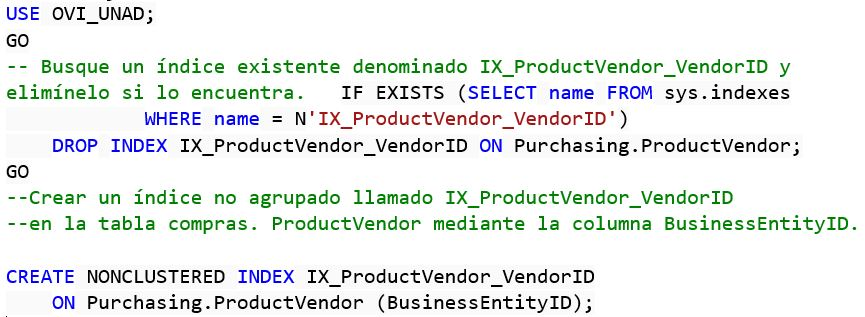
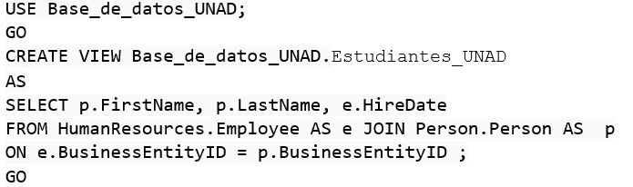
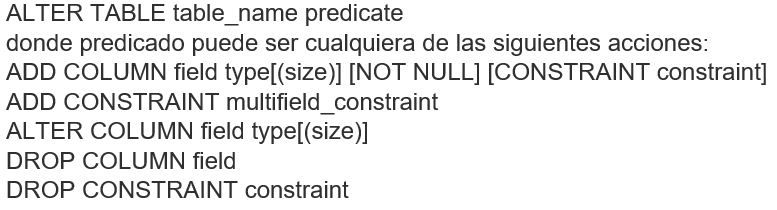
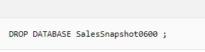

1. Indices en SQL Server
Un índice es una estructura en disco o en memoria asociada con una tabla o vista que acelera la recuperación de filas de la tabla o vista. Un índice contiene claves generadas a partir de una o varias columnas de la tabla o la vista.
Para crear un índice no clúster en una tabla:
- 1. En el "Explorador de objetos", conéctese a una instancia del Motor de base de datos.
- 2. En la barra de Estándar, haga clic en "Nueva consulta".
- 3. Utilice el siguiente ejemplo en la ventana de consulta y haga clic en "Ejecutar"

Microsoft. (2017). índice no clúster en una tabla. 25-04-2019, de Microsoft Sitio web: https://docs.microsoft.com/es-es/sql/relational-databases/sql-server-index-design-guide?view=sql-server-2017
2. Crear una ina vista de SQL Server
En el siguiente ejemplo se crea una vista que contiene todos los empleados y sus fechas de contratación denominada Estudiantes_UNAD.

Microsoft. (2017). VIstas. 25-04-2019, de Microsoft Sitio web: https://docs.microsoft.com/es-es/sql/t-sql/statements/alter-view-transact-sql?view=sql-server-2017
3. Modificación de tablas
Puede crear y modificar tablas, restricciones, índices y relaciones en Access escribiendo consultas de definición de datos en la vista SQL
Para modificar una tabla, use un comando ALTER TABLE. Puede usar un comando ALTER TABLE para agregar, modificar o quitar las restricciones o columnas (eliminar). Un comando ALTER TABLE tiene la siguiente sintaxis:

Microsoft. (2017). Access SQL: conceptos básicos, vocabulario y sintaxis. 25-04-2019, de Microsoft Sitio web: https://support.office.com/es-es/article/access-sql-conceptos-b%C3%A1sicos-vocabulario-y-sintaxis-444d0303-cde1-424e-9a74-e8dc3e460671
4. Borrado de Base de Datos y Tablas
Para quitar una instantánea de base de datos:
- 1. Identifique la instantánea de base de datos que desee quitar. Puede ver las instantáneas de una base de datos en SQL Server Management Studio. Para obtener más información, vea Ver una instantánea de base de datos (SQL Server).
- 2. Ejecute una instrucción DROP DATABASE especificando el nombre de la instantánea de base de datos que se quitará. La sintaxis es la siguiente:
DROP DATABASE nombre_de_instantánea_de_base_de_datos [ ,...n ]
Donde nombre_de_instantánea_de_base_de_datos es el nombre de la instantánea de base de datos que se va a quitar.

Para eliminar una tabla de la base de datos:
- 1. En el Explorador de objetos, seleccione la tabla que desea eliminar.
- 2. Haga clic con el botón derecho en la tabla y elija Eliminar en el menú contextual.
- 3. Un cuadro de mensaje le pedirá que confirme la eliminación. Haga clic en Sí.
Microsoft. (2017). Access SQL: conceptos básicos, vocabulario y sintaxis. 25-04-2019, de Microsoft Sitio web: https://support.office.com/es-es/article/access-sql-conceptos-b%C3%A1sicos-vocabulario-y-sintaxis-444d0303-cde1-424e-9a74-e8dc3e460671